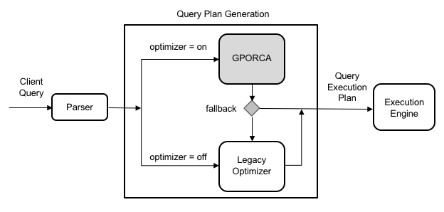

GPORCA Overview
GPORCA is an enhanced optimizer built upon the Postgres query optimizer, augmenting query planning and optimization capabilities. It is highly extensible and achieves more efficient optimization, especially in multi-core architectures. By default, SynxDB Elastic uses GPORCA to generate query execution plans in supported scenarios.
GPORCA significantly enhances the query performance of SynxDB Elastic in the following areas:
Queries on partitioned tables
Queries with Common Table Expressions (CTEs)
Queries with subqueries
In SynxDB Elastic, GPORCA coexists with the Postgres-based optimizer. By default, the system first attempts to use GPORCA. When a query is not supported by GPORCA, the system automatically falls back to using the Postgres optimizer.
The following diagram illustrates the position of GPORCA in the overall query planning architecture:

Note that all server parameters used to configure the behavior of the Postgres optimizer are ignored when GPORCA is active. These parameters only affect query plan generation when the system falls back to the Postgres optimizer.
Enable or disable GPORCA
You can enable or disable GPORCA using the optimizer server configuration parameter.
Although GPORCA is enabled by default, you can flexibly configure the optimizer parameter at the system, database, session, or query level to control whether GPORCA is used.
Enable GPORCA for a database
You can use the ALTER DATABASE command to enable GPORCA for a specific database. The following example enables GPORCA for the test_db database:
ALTER DATABASE test_db SET optimizer = on;
Enable GPORCA for a session or query
Use the SET command to enable GPORCA in the current session. For example, execute the following command after connecting to SynxDB Elastic via psql:
SET optimizer = on;
To enable GPORCA for a single query, run the above SET command before executing the query.
Determine which query optimizer is used
When GPORCA is enabled (the default configuration), you can determine whether SynxDB Elastic is actually using GPORCA or has fallen back to the Postgres-based optimizer in several ways.
The most direct method is to examine the EXPLAIN plan of the query:
The optimizer used is indicated at the end of the query plan. For example:
If generated by GPORCA, the end shows:
Optimizer: GPORCA
If generated by the Postgres optimizer, the end shows:
Optimizer: Postgres-based planner
If the query plan includes nodes of type
Dynamic <any> Scan(such as dynamic assertion, dynamic sequence scan, etc.), the plan was generated by GPORCA. The Postgres optimizer does not generate these nodes.For queries on partitioned tables, GPORCA’s
EXPLAINoutput shows only the number of partitions after pruning, without listing the specific partitions. The Postgres optimizer, on the other hand, lists each partition that is scanned.
In addition to the EXPLAIN output, the optimizer type used is also recorded in the logs. If a query is not supported by GPORCA for some reason, the system automatically falls back and outputs relevant information at the NOTICE level in the log, explaining the reason for the fallback.
You can also enable the optimizer_trace_fallback configuration parameter to display the detailed reasons for GPORCA fallback directly in psql.
Examples
The following examples demonstrate the effect of executing queries on a partitioned table when GPORCA is enabled.
The CREATE TABLE statement below creates a table that is range-partitioned by date:
CREATE TABLE sales (trans_id int, date date,
amount decimal(9,2), region text)
PARTITION BY RANGE (date)
(START (date '2016-01-01')
INCLUSIVE END (date '2017-01-01')
EXCLUSIVE EVERY (INTERVAL '1 month'),
DEFAULT PARTITION outlying_dates );
The plan generated by GPORCA only shows the number of selected partitions, without listing their names:
-> Partition Selector for sales (dynamic scan id: 1) (cost=10.00..100.00 rows=50 width=4)
Partitions selected: 13 (out of 13)
If a query on a partitioned table is not supported by GPORCA, the system automatically switches to the Postgres optimizer. The EXPLAIN generated by Postgres lists all accessed partitions, as shown below:
-> Append (cost=0.00..0.00 rows=26 width=53)
-> Seq Scan on sales2_1_prt_7_2_prt_usa sales2 (cost=0.00..0.00 rows=1 width=53)
-> Seq Scan on sales2_1_prt_7_2_prt_asia sales2 (cost=0.00..0.00 rows=1 width=53)
...
The following example shows the log output when a query falls back to the Postgres optimizer:
Execute the following query:
EXPLAIN SELECT * FROM pg_class;
The system will use the Postgres optimizer and output a NOTICE message in the log, explaining why GPORCA did not handle the query.
INFO: GPORCA failed to produce a plan, falling back to Postgres-based planner
DETAIL: Falling back to Postgres-based planner because GPORCA does not support the following feature: Non-default collation